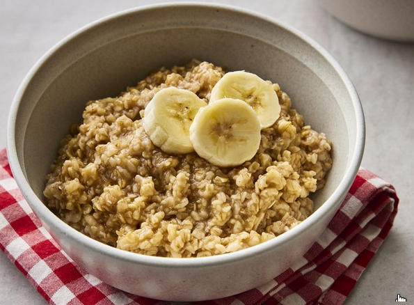

Maple and Brown Sugar Oatmeal

Ingredients
- 1 ½ cups water
- ¾ cup quick-cooking oats
- 1 tablespoon packed dark brown sugar
Directions
- Gather all ingredients.
- Bring water to a boil in a small pot. Add oats and cook, stirring, for 1 minute.
- Remove from heat and stir in brown sugar and maple syrup. Let sit until desired thickness is reached, 2 to 3 minutes.
Enjoy!